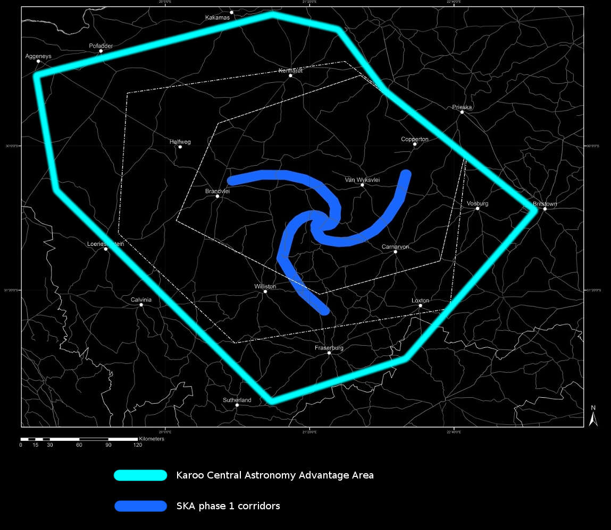

This website serves to inform everybody about events as they are experienced on the ground, surrounding SKA, the Square Kilometer Array radio astronomy project in South Africa.
In the main article South Africa's chosen site will be examined, many immediate and future impacts considered and financial challenges facing the project will be highlighted.
Affected and interested parties are invited to share comments and stories on our Facebook page or sign our online petition. Please feel free to ask questions and become involved.
A big thank you to all the wonderful people of the Karoo, and our friends from further afield, who have all worked so hard to help create this website. The support and love you have shown will save the Karoo.
You can download the pdf version of our article by liking the button below.
Download ArticleFeel free to email us to provide some feedback on our research, help us with our cause, or to just say hello!
